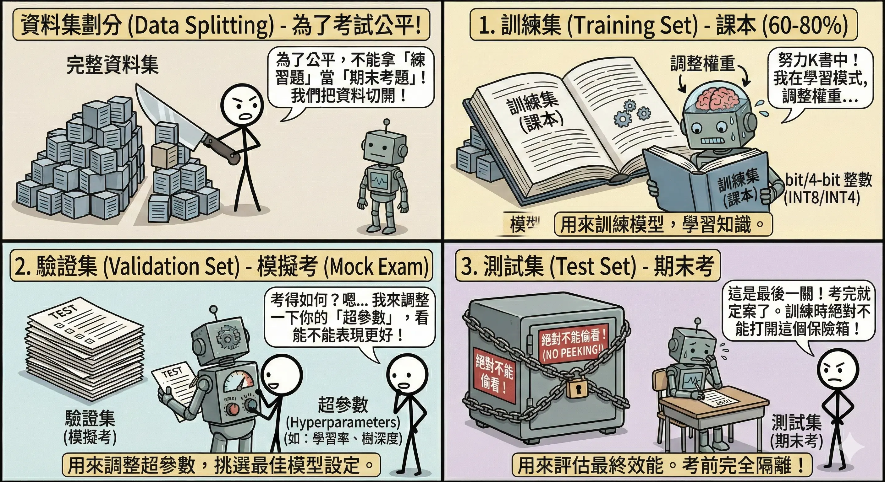
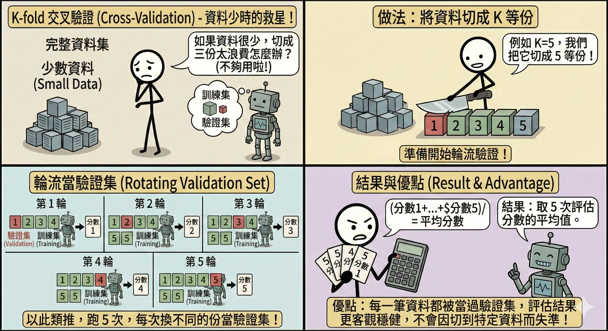
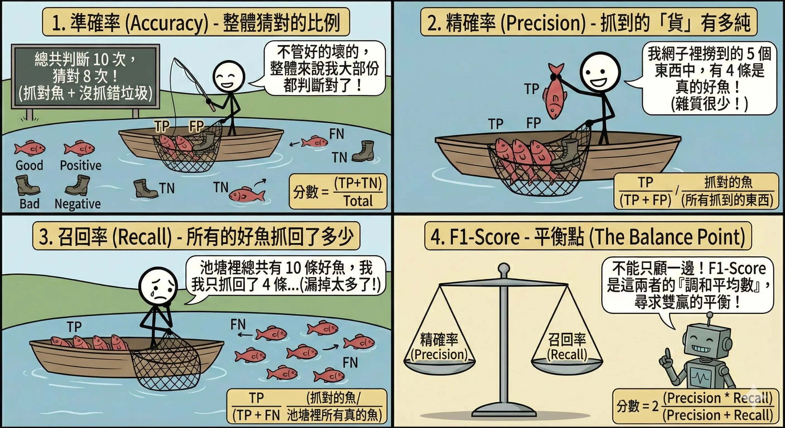
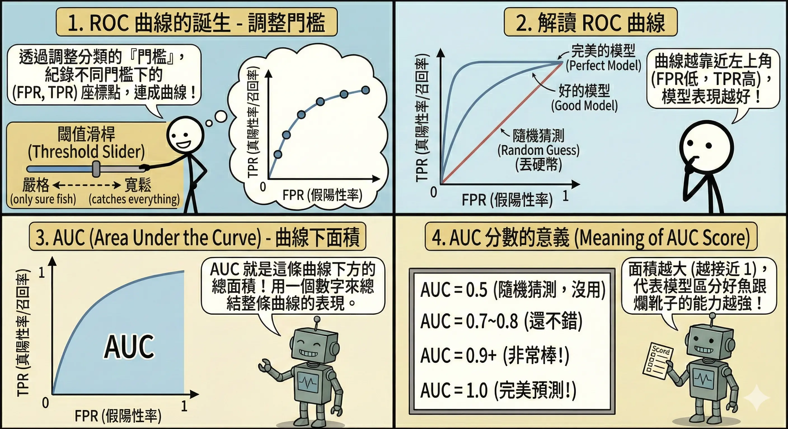
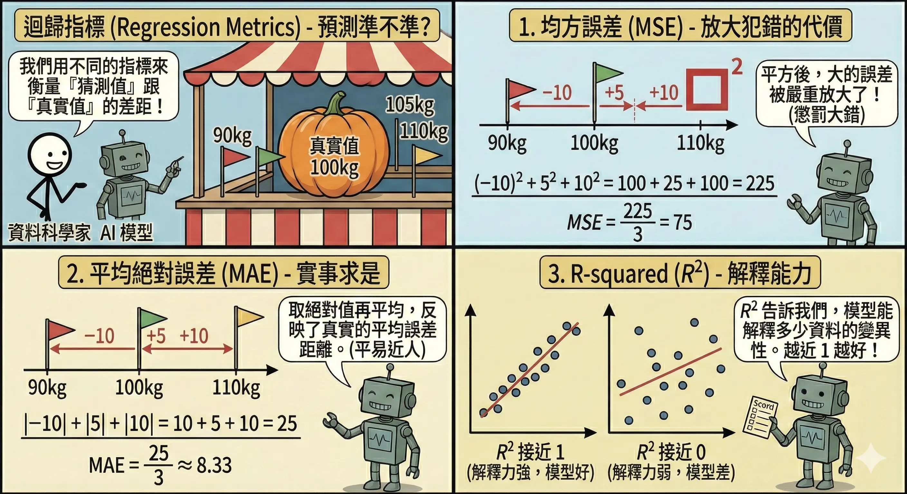
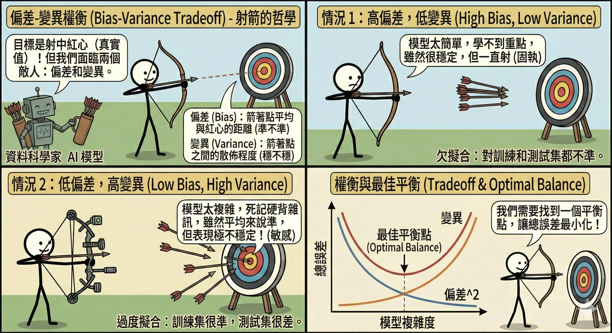
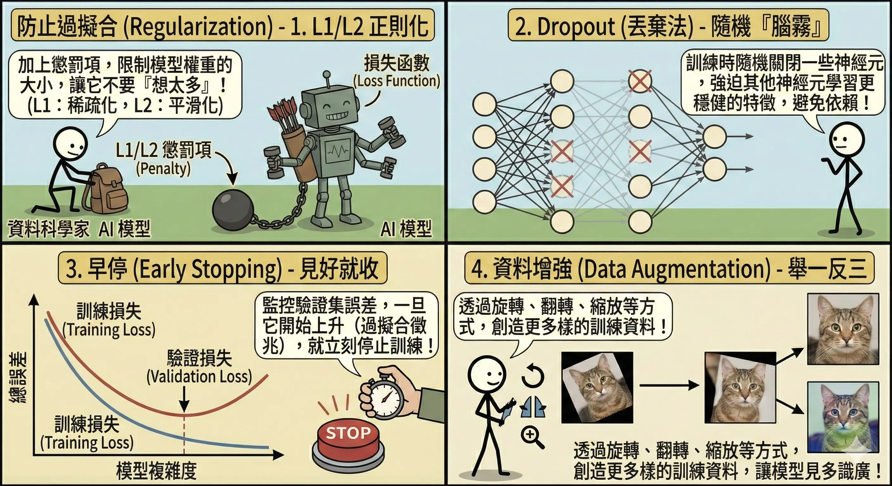

模型評估與效能優化 (Model Evaluation & Optimization)
訓練完模型只是第一步，更重要的是知道它「好不好用」。如果沒有正確的評估，你可能會把一個只會死記硬背的模型誤認為天才。
評估流程與指標
資料集劃分 (Data Splitting)
為了考試公平，我們不能拿「練習題」來當「期末考題」。
- 訓練集 (Training Set)：課本。用來訓練模型，調整權重。通常佔 60-80%。
- 驗證集 (Validation Set)：模擬考。用來調整超參數 (Hyperparameters)（如學習率、樹的深度），挑選最佳模型。
- 測試集 (Test Set)：期末考。考完就定案了，用來評估最終效能。絕對不能偷看（不能用於訓練或調整參數）！

K-fold 交叉驗證 (Cross-Validation)
如果資料很少，切成三份（訓練/驗證/測試）太浪費怎麼辦？或者我們擔心切出來的驗證集剛好特別簡單或特別難？
- 核心概念：輪流當驗證集。
- 運作流程 (K=5** 為例)**：
- 切分：將全部資料隨機切成 5 等份 (Fold 1 ~ Fold 5)。
- 輪替訓練：進行 5 輪實驗。
- 第 1 輪：拿 Fold 1 當驗證集，Fold 2-5 當訓練集。
- 第 2 輪：拿 Fold 2 當驗證集，Fold 1, 3, 4, 5 當訓練集。
- …以此類推，直到每一份都當過一次驗證集。
- 平均：將 5 次的評估分數加起來除以 5，得到最終成績。
- 類比：輪流模擬考。
- 為了客觀評估實力，不能只考一張考卷（可能剛好都會寫）。
- 要考 5 張不同的考卷，然後算平均分，這樣才能反映真實水平。
- 優點：
- 不浪費資料：每一筆資料都有機會被用來訓練，也有機會被用來驗證。
- 穩健 (Robust)：評估結果更客觀，不會因為運氣好切到簡單的資料就以為模型很強。

分類指標 (Classification Metrics)
對於二元分類問題（如：有病/沒病），我們使用混淆矩陣 (Confusion Matrix)：
| 預測：有病 (Positive) | 預測：沒病 (Negative) | |
|---|---|---|
| 實際：有病 (True) | TP (True Positive) 抓到了！(真陽性) |
FN (False Negative) 漏報！(假陰性) |
| 實際：沒病 (False) | FP (False Positive) 誤報！(假陽性) |
TN (True Negative) 沒事！(真陰性) |
- 準確率 (Accuracy)：答對的比例。
- \[ Accuracy = \frac{TP + TN}{TP + TN + FP + FN} \]
- 陷阱：如果 99% 的人沒病，模型全部猜「沒病」，準確率也有 99%，但完全沒用（抓不到病人）。資料不平衡時別用 Accuracy。
- 精確率 (Precision)：在所有被判斷為有病的人中，真的有病的比例。
- \[ Precision = \frac{TP}{TP + FP} \]
- 應用：垃圾郵件過濾（寧可漏抓，也不要誤把重要信件當垃圾信）。希望 FP 越低越好。
- 召回率 (Recall)：在所有真的有病的人中，被成功抓出來的比例。
- \[ Recall = \frac{TP}{TP + FN} \]
- 應用：癌症篩檢、地震預警（寧可誤判複檢，也不能漏掉任何一個病人）。希望 FN 越低越好。
- F1-Score：Precision 和 Recall 的調和平均數。
- \[ F1 = 2 \times \frac{Precision \times Recall}{Precision + Recall} \]
- 當需要兼顧兩者時使用。

- AUC-ROC 曲線：
- 概念：評估模型在所有可能的分類門檻 (Threshold) 下的表現。
- 模型輸出的通常是機率（如 0.8）。我們可以設定門檻為 0.5（大於 0.5 算有病），也可以設為 0.9（非常確定才算有病）。
- ROC 曲線：X 軸是 FPR (誤報率)，Y 軸是 TPR (召回率)。我們希望 FPR 越低越好，TPR 越高越好（曲線越往左上角靠越好）。
- AUC (Area Under Curve)：曲線下的面積，用來量化模型的好壞。
- AUC = 0.5：跟丟銅板一樣（亂猜）。
- AUC = 0.7~0.8：還不錯。
- AUC > 0.9：非常準確。
- AUC = 1.0：完美神人（但通常是資料洩漏）。
- 類比：排隊能力。AUC 越高，代表模型越能把「有病的人」排在「沒病的人」前面（機率值較高）。
- 概念：評估模型在所有可能的分類門檻 (Threshold) 下的表現。

迴歸指標 (Regression Metrics)
- 均方誤差 (MSE, Mean Squared Error)：
- \[ MSE = \frac{1}{n} \sum (y_{true} - y_{pred})^2 \]
- 特點：會放大極端誤差（因為平方）。如果很在意大錯，就看這個。
- 平均絕對誤差 (MAE, Mean Absolute Error)：
- \[ MAE = \frac{1}{n} \sum |y_{true} - y_{pred}| \]
- 特點：對離群值較不敏感，解釋直觀（平均差幾分）。
- R-squared (R2, 決定係數)：
- \[ R^2 = 1 - \frac{SS_{res}}{SS_{tot}} = 1 - \frac{\sum (y_{true} - y_{pred})^2}{\sum (y_{true} - y_{mean})^2} \]
- 意義：衡量模型解釋了資料多少變異。
- R2 = 1：完美擬合（誤差為 0）。
- R2 = 0：跟「直接猜平均值」一樣爛。
- R2 < 0：比亂猜還爛（模型完全錯了）。

誤差分析與正則化
偏差-變異權衡 (Bias-Variance Tradeoff)
- 偏差 (Bias)：模型準不準？（訓練集誤差）
- 高偏差 (High Bias)：模型太簡單，學不會資料的規律。稱為欠擬合 (Underfitting)。
- 解法：增加模型複雜度（加層數、加特徵）、減少正則化。
- 變異 (Variance)：模型穩不穩？（訓練集 vs 驗證集誤差差距）
- 高變異 (High Variance)：模型太複雜，把雜訊也學進去了，導致在訓練集考 100 分，驗證集不及格。稱為過擬合 (Overfitting)。
- 解法：增加資料量、正則化、簡化模型。

防止過擬合技術 (Regularization)
- L1/L2 正則化 (Regularization)：
- 概念：在損失函數後面加一個「懲罰項」，如果權重太複雜（數值太大），就罰分。
- L1 (Lasso)：會讓不重要的權重變成 0（具有特徵選擇的效果）。
- L2 (Ridge)：會讓權重變得很小但不為 0（防止單一特徵獨大）。
- Dropout (隨機拋棄)：
- 運作：在訓練時，隨機「關掉」一部分神經元（例如 50%）。
- 類比：軍隊演習。隨機抽走指揮官，強迫部隊不能依賴特定的人，必須每個人都學會作戰。
- 效果：每次訓練的網路結構都不一樣，最後預測時等於是多個網路的集成 (Ensemble)，效果更穩健。
- 早停 (Early Stopping)：
- 運作：在訓練過程中監控驗證集 (Validation Set) 的誤差。
- 機制：如果訓練集的誤差還在降（還在背答案），但驗證集的誤差開始上升（考試考不好），代表開始過擬合了。此時啟動耐心機制 (Patience)（例如再觀察 5 輪），如果沒改善就立刻停止訓練，並回溯到表現最好的那個時間點。
- 資料增強 (Data Augmentation)：
- 概念：如果資料不夠，就自己造！
- 影像：旋轉、裁切、調亮、水平翻轉、加雜訊。
- 文字：同義詞替換、隨機刪除、回譯 (Back Translation, 中→英→中)。
- 聲音：調整音調、改變速度、加入背景噪音。

本章總結與考點提示
核心概念回顧
評估是優化的基礎。
- 資料劃分：Train (課本) / Validation (模擬考) / Test (期末考)。
- 分類指標：
- Accuracy：整體答對率 (小心不平衡資料)。
- Precision：抓到的有多少是真的 (寧缺勿濫)。
- Recall：真的有多少被抓到 (寧濫勿缺)。
- F1-Score：P 和 R 的平衡。
- 迴歸指標：MSE (怕大錯)、MAE (直觀)。
- 誤差分析：
- Bias：準不準 (Underfitting)。
- Variance：穩不穩 (Overfitting)。
- 抗過擬合：L1/L2 正則化、Dropout、Early Stopping、Data Augmentation。
AI 應用規劃師認證考點
常考題型與解題策略：
- 指標選擇題：
- 例題：「癌症篩檢模型應最重視哪個指標？」
- 解答：Recall (召回率)。因為漏診後果嚴重。
- 例題：「垃圾郵件過濾應最重視哪個指標？」
- 解答：Precision (精確率)。因為不想把重要信件誤判為垃圾信。
- 過擬合判斷題：
- 例題：「訓練集準確率 99%，測試集準確率 60%，這是什麼情況？」
- 解答：過度擬合 (Overfitting) / 高變異 (High Variance)。
- 例題：「訓練集準確率 60%，測試集準確率 59%，這是什麼情況？」
- 解答：欠擬合 (Underfitting) / 高偏差 (High Bias)。
- 解決方案題：
- 例題：「遇到過度擬合該怎麼辦？」
- 解答：增加資料、使用 Dropout、L2 正則化、早停。
記憶口訣
- Precision：「貴精不貴多」（抓得準）。
- Recall：「一網打盡」（抓得全）。
- Overfitting：「死讀書」（只會考題，不會應用）。
- Underfitting：「書沒讀好」（連考題都不會）。
延伸思考
- 為什麼 Accuracy 在資料不平衡時會騙人？（因為模型只要全部猜多數類別，分數就會很高，但完全沒有鑑別力）。